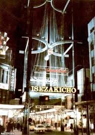
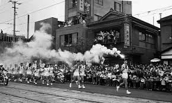
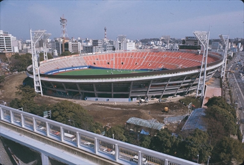
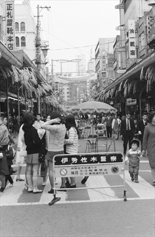

<!DOCTYPE html>
<html lang="jp"></html>
<head>
    <title>インタビュー</title>
</head>
<body>
    <h1>私のみた昭和の横浜ー横浜での進学、就職、結婚、育児ー</h1>
    <h2><li>昭和のクリスマスの過ごし方</li></h2>
    <br>
    <h2><li>1964年 東京オリンピック 聖火リレーついて</li></h2>
    <br>
    <h2><li>横浜スタジアム 横浜の野球の聖地</li></h2>
    <br>
    <h2><li>懐かしき昭和の横浜駅</li></h2>
    <br>
    <h2><li>昔、伊勢佐木町は若者とファミリー層のアンテナだった？</li></h2>
    <br>


</body>